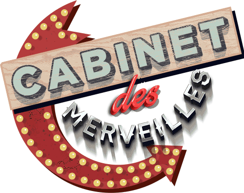

<!DOCTYPE html><html><head>
    <meta charset="UTF-8">
    <!-- generator meta tag -->
    <!-- leave this for stats and Silex version check -->
    <meta name="generator" content="Silex v2.2.7">
    <!-- End of generator meta tag -->
    <script type="text/javascript" src="js/jquery.js"></script>
    <script type="text/javascript" src="js/jquery-ui.js"></script>
    <script type="text/javascript" src="js/pageable.js"></script>
    <script type="text/javascript" src="js/front-end.js"></script>
    <link rel="stylesheet" href="css/normalize.css">
    <link rel="stylesheet" href="css/front-end.css">

    
    <script type="text/javascript" class="silex-script"></script>
    
    <title>Le cabinet des merveilles</title>
    

    
<meta name="viewport" content="width=device-width, initial-scale=1, maximum-scale=2.2" data-silex-viewport=""><meta name="website-width" content="960"><meta name="twitter:title" content="Le Cabinet des merveilles"><meta name="og:title" content="Le Cabinet des merveilles"><meta name="twitter:card" content="summary"><!-- Silex HEAD tag do not remove -->
    <!-- End of Silex HEAD tag do not remove --><link href="css/styles.css" rel="stylesheet" type="text/css"><style>body { opacity: 0; transition: .25s opacity ease; }</style></head>

<body class="body-initial all-style enable-mobile silex-runtime silex-published" data-silex-type="container">
    <div class="silex-pages">
        <div data-silex-type="image" class="editable-style silex-id-hamburger-menu image-element menu-button prevent-draggable prevent-resizable">
            
        </div>

        <a id="page-accueil" data-silex-type="page" class="page-element">Accueil</a><a id="page-a-propos" data-silex-type="page" class="page-element">A propos</a><a id="page-contact" data-silex-type="page" class="page-element">Contact</a><a id="page-objectifs" data-silex-type="page" class="page-element">Objectifs</a><a id="page-la-gen-se" data-silex-type="page" class="page-element">La genèse</a><a id="page-contexte" data-silex-type="page" class="page-element">Contexte</a><a id="page-ressources" data-silex-type="page" class="page-element">Ressources</a></div>


    <div data-silex-type="container" class="prevent-draggable container-element editable-style silex-id-1478366444112-1 section-element" style="" title="home">
        <div data-silex-type="container" class="editable-style silex-element-content silex-id-1478366444112-0 silex-container-content container-element prevent-draggable website-width"><div data-silex-type="container" class="editable-style silex-id-1541430726041-32 container-element nav" style=""><a href="#!page-a-propos" data-silex-type="text" class="editable-style text-element silex-id-1541430790538-34 nav-mark" style="" title="à propos"><div class="silex-element-content normal"><p style="text-align: center;"><span style="color: rgb(255, 255, 255);">A propos</span><br></p></div></a><a href="#!page-accueil" data-silex-type="text" class="editable-style silex-id-1541430752172-33 text-element nav-mark page-link-active" style="" title="accueil"><div class="silex-element-content normal"><p style="text-align: center;"><span style="color: rgb(255, 255, 255);">Accueil</span></p></div></a><a href="#!page-contact" data-silex-type="text" class="editable-style text-element silex-id-1541430804854-35 nav-mark" style="" title="contact"><div class="silex-element-content normal"><p style="text-align: center;"><span style="color: rgb(255, 255, 255);">Contact</span></p></div></a></div></div>
    </div>
    <div data-silex-type="container" class="prevent-draggable container-element editable-style silex-id-1474394621033-3 section-element page-a-propos paged-element page-objectifs page-la-gen-se page-contexte" style="">
        <div data-silex-type="container" class="editable-style silex-element-content silex-id-1474394621032-2 silex-container-content container-element prevent-draggable website-width"><div data-silex-type="container" class="editable-style silex-id-1541429794237-15 container-element" style=""><a href="#!page-la-gen-se" data-silex-type="container" class="editable-style container-element silex-id-1541428345633-9 menu2" style=""><div data-silex-type="text" class="editable-style text-element silex-id-1541429550863-12 nav-mark2" style="" data-silex-href="#!page-la-gen-se"><div class="silex-element-content normal"><p><span style="color: rgb(255, 255, 255);">La genèse</span><br></p></div></div></a><a href="#!page-contexte" data-silex-type="container" class="editable-style container-element silex-id-1541428355717-10 menu" style=""><div data-silex-type="text" class="editable-style text-element silex-id-1541429556554-13 nav-mark2" style="" data-silex-href="#!page-contexte"><div class="silex-element-content normal"><p><span style="color: rgb(255, 255, 255);">Le contexte</span><br></p></div></div></a><a href="#!page-objectifs" data-silex-type="container" class="editable-style silex-id-1541428293476-8 container-element menu" style=""><div data-silex-type="text" class="editable-style silex-id-1541429437459-11 text-element nav-mark2" style="" data-silex-href="#!page-objectifs"><div class="silex-element-content normal"><p><span style="color: rgb(255, 255, 255);">Les objectifs</span><br></p></div></div></a></div></div>
    </div>
    <div data-silex-type="container" class="prevent-draggable container-element editable-style silex-id-1478366450713-3 section-element paged-element page-a-propos page-objectifs page-la-gen-se paged-element-hidden" style="">
        <div data-silex-type="container" class="editable-style silex-element-content silex-id-1478366450713-2 silex-container-content container-element prevent-draggable website-width">

            
        <div data-silex-type="text" class="editable-style text-element silex-id-1541500588861-44 page-objectifs paged-element" style=""><div class="silex-element-content normal"><p style="margin-bottom: 0cm"><font size="2"><b><span style="font-family: arial, sans-serif;"><font color="#00000a"><span style="font-style: normal" class="normal">Les
objectifs&nbsp;de notre projet sont de permettre aux personnes vivant
avec le VIH (dans un premier temps puis les personnes ayant une
maladie chronique), leurs soignant.e.s et leurs aidant.e.s&nbsp;: </span></font></span></b></font>
</p><p style="margin-bottom: 0cm; line-height: 100%" align="JUSTIFY"><span style="font-family: arial, sans-serif;"><font size="2">- d’exprimer&nbsp;leurs
	représentations et leurs savoirs liés à leurs parcours avec le
	VIH,</font></span><span style="font-family: arial, sans-serif;"><font size="2"><font size="2"><span style="font-family: arial, sans-serif;"><br></span></font></font></span></p><p style="margin-bottom: 0cm; line-height: 100%" align="JUSTIFY"><span style="font-family: arial, sans-serif;"><font size="2"><font size="2"><span style="font-family: arial, sans-serif;">- </span></font>de
	découvrir ou de redécouvrir leurs ressources,</font></span><span style="font-family: arial, sans-serif;"><font size="2"><font size="2"><span style="font-family: arial, sans-serif;"><br></span></font></font></span></p><p style="margin-bottom: 0cm; line-height: 100%" align="JUSTIFY"><span style="font-family: arial, sans-serif;"><font size="2"><font size="2"><span style="font-family: arial, sans-serif;">- </span></font>de
	les accompagner à se situer dans un parcours de vie avec cette
	maladie devenue chronique,</font></span><span style="font-family: arial, sans-serif;"><font size="2"><font size="2"><span style="font-family: arial, sans-serif;"><br></span></font></font></span></p><p style="margin-bottom: 0cm; line-height: 100%" align="JUSTIFY"><span style="font-family: arial, sans-serif;"><font size="2"><font size="2"><span style="font-family: arial, sans-serif;">- </span></font>de
	leur permettre de se projeter dans les différentes étapes de
	l'évolution de leur maladie chronique,</font></span><span style="font-family: arial, sans-serif;"><font size="2"><font size="2"><span style="font-family: arial, sans-serif;"><br></span></font></font></span></p><p style="margin-bottom: 0cm; line-height: 100%" align="JUSTIFY"><span style="font-family: arial, sans-serif;"><font size="2"><font size="2"><span style="font-family: arial, sans-serif;">- </span></font>de
	participer à des espaces de partage d'expériences entre
	patient.e.s, leurs entourages et leurs soignant.e.s.</font></span></p></div></div><div data-silex-type="text" class="editable-style text-element silex-id-1541500588824-43 page-objectifs paged-element paged-element-hidden" style=""><div class="silex-element-content normal"><p style="margin-bottom: 0cm; text-align: left;"><font size="2"><b><span style="font-family: arial, sans-serif;" class="normal">Le Cabinet des Merveilles propose&nbsp;:</span></b></font></p><p style="text-align: left;"><font size="2"><span style="font-family: arial, sans-serif;">
</span></font></p><p style="margin-bottom: 0cm; text-align: left;"><font size="2"><span style="font-family: arial, sans-serif;">- de jouer à partir d’interfaces
multimédias pour découvrir l’histoire, les mémoires et les vécus
des personnes vivant avec le VIH, leurs soignant.e.s et leurs
entourages,  des activistes et des artistes,</span></font></p><p style="text-align: left;"><font size="2"><span style="font-family: arial, sans-serif;">
</span></font></p><p style="margin-bottom: 0cm; text-align: left;"><font size="2"><span style="font-family: arial, sans-serif;">- d’explorer de multiples ressources
regroupées,</span></font></p><p style="text-align: left;"><font size="2"><span style="font-family: arial, sans-serif;">
</span></font></p><p style="margin-bottom: 0cm; text-align: left;"><font size="2"><span style="font-family: arial, sans-serif;">- de contribuer à enrichir ce musée
virtuel de son expérience personnelle, professionnelle, artistique…</span></font></p><p style="text-align: left;"><font size="2"><span style="font-family: arial, sans-serif;">
</span></font></p><p style="margin-bottom: 0cm; text-align: left;"><font size="2"><span style="font-family: arial, sans-serif;">- de participer à lutter contre les
préjugés et les discriminations qui impactent encore la vie des
personnes vivant avec le VIH,</span></font></p><p style="text-align: left;"><font size="2"><span style="font-family: arial, sans-serif;">
</span></font></p><p style="margin-bottom: 0cm; text-align: left;"><font size="2"><span style="font-family: arial, sans-serif;">- de fédérer les générations de
personnes vivant avec le VIH, les soignant.e.s, les aidant.e.s, les
artistes et le grand public,</span></font></p><p style="text-align: left;"><font size="2"><span style="font-family: arial, sans-serif;">
</span></font></p><p style="margin-bottom: 0cm; text-align: left;"><font size="2"><span style="font-family: arial, sans-serif;">- d’accompagner les démarches
d’éducation thérapeutique et d’observance thérapeutique en
innovant par une approche transmédia pluridisciplinaire,</span></font></p><p style="text-align: left;"><font size="2"><span style="font-family: arial, sans-serif;">
</span></font></p><p style="margin-bottom: 0cm; text-align: left;"><font size="2"><span style="font-family: arial, sans-serif;">- de contribuer à relier les
collections dispersées d’œuvres d’art, de documentations,
d’archives des actrices et acteurs de la lutte contre le sida.</span></font></p></div></div><div data-silex-type="text" class="editable-style text-element silex-id-1541500619986-45 paged-element page-la-gen-se" style=""><div class="silex-element-content normal"><p style="margin-bottom: 0cm; text-align: left;"><span style="font-family: arial, sans-serif;"><font size="2"><span>&nbsp;&nbsp; &nbsp;</span>Les membres fondateurs de
La Fabric’Art-thérapie ont décidé de créer l’association à
l’occasion de la Journée Mondiale de lutte contre le Sida de 2015.
Le<sup> </sup>premier décembre 2015 est l’anniversaire d’une
mobilisation commune qui a débuté il y a dix ans à la Maison Folie
de Wazemmes à Lille. En 2005, à la Maison Folie de Wazemmes se sont
réunies des personnes venant de toute la France se mobilisant dans
le domaine de la santé et plus particulièrement du VIH. 
</font></span></p><p><span style="font-family: arial, sans-serif;"><font size="2">

</font></span></p><p style="margin-bottom: 0cm; text-align: left;"><span style="font-family: arial, sans-serif;"><font size="2"><span>&nbsp;&nbsp; &nbsp;</span>En 2005 à l’occasion
du premier décembre, nous avions invité à la Maison Folie de
Wazemmes à Lille le chercheur Stéphane Abriol à venir présenter
la recherche collecte «&nbsp;Les mémoires et l’histoire du Sida&nbsp;»
à laquelle il avait contribué avec Françoise Loux. Nous avions
déjà pressenti à l’époque la nécessité d’articuler nos
actions (prévention primaire et accompagnement des personnes vivant
avec le VIH) avec une réflexion menée collectivement sur la
conservation et la médiation des mémoires et de l’histoire de la
lutte contre le sida.</font></span></p><p><span style="font-family: arial, sans-serif;"><font size="2">

</font></span></p><p style="margin-bottom: 0cm; text-align: left;"><span style="font-family: arial, sans-serif;"><font size="2"><span>&nbsp;&nbsp; &nbsp;</span>Courant 2015, le projet
de créer un cabinet de curiosités à la fois virtuel et tangible
émergeait. Des expérimentations ont été menées à Lyon et à
Marseille de 2015 à 2018 confirmant nos hypothèses et nourrissant
notre désir de concrétiser ce projet transmédia innovant.</font></span></p>
</div></div><div data-silex-type="text" class="editable-style silex-id-1541503021066-46 text-element page-a-propos paged-element paged-element-hidden" style=""><div class="silex-element-content normal"><h3><font size="6"><span style="font-family: arial, sans-serif;"><font class="heading3">à propos</font></span></font><br></h3></div></div><div data-silex-type="text" class="editable-style text-element silex-id-1541503755923-47 page-objectifs paged-element" style=""><div class="silex-element-content normal"><h3><font size="6"><span style="font-family: arial, sans-serif;"><font class="heading3">les objectifs</font></span></font><br></h3></div></div><div data-silex-type="text" class="editable-style text-element silex-id-1541503802056-48 page-la-gen-se paged-element paged-element-hidden" style=""><div class="silex-element-content normal"><h3><font size="6"><span style="font-family: arial, sans-serif;"><font class="heading3">La genèse</font></span></font><br></h3></div></div><div data-silex-type="text" class="editable-style silex-id-1541429663671-14 text-element page-a-propos paged-element" style=""><div class="silex-element-content normal"><p><span style="font-family: arial, sans-serif;"><font size="2">&nbsp;&nbsp;&nbsp; Le terme&nbsp;: cabinet
des merveilles est la contraction de deux termes&nbsp;: «&nbsp;cabinet
de curiosités&nbsp;» et «&nbsp;théâtre des merveilles&nbsp;».
Les cabinets de curiosités apparurent à la Renaissance. Comme nous
le rappellent M.P Imberti<font color="#ff0000"> </font>et C.Duclos
«&nbsp;<i>le cabinet de curiosités trouve son essence dans la
volonté de déchiffrer le mystère des créations de la nature et de
l’homme en rassemblant et en donnant à voir toute la complexité
du monde qui nous entoure. D’abord collectées pour leur beauté et
leur rareté, «&nbsp;les curiosités&nbsp;» étaient réunies pour
leur faculté à stimuler l’imagination.&nbsp;</i>»</font></span></p><p style="margin-bottom: 0cm; text-align: left;"><span style="font-family: arial, sans-serif;"><font size="2">&nbsp;&nbsp; &nbsp;Nous souhaitons à notre
tour «&nbsp;stimuler l’imagination&nbsp;» pour faire face
ensemble aux défis actuels liés à l’épidémie du Sida&nbsp;!</font></span></p><div style="text-align: left;"><p>
</p></div><p style="margin-bottom: 0cm; text-align: left;"><span style="font-family: arial, sans-serif;"><font size="2">&nbsp;&nbsp; &nbsp;C’est pourquoi nous
avons commencé à imaginer depuis 2015 la création d’un cabinet
de curiosités dédié à la lutte contre le Sida. Nous vous
proposons aujourd’hui d’y contribuer en visitant notre site, en
participant à des ateliers, en proposant de partager des contenus…
Notre Cabinet des merveilles est le vôtre&nbsp;!</font></span></p><div style="text-align: left;"><p>
</p></div><p style="margin-bottom: 0cm; text-align: left;"><span style="font-family: arial, sans-serif;"><font size="2">&nbsp;&nbsp; &nbsp;Il est à la fois virtuel
et à la fois tangible. Dédié à l’Histoire
et aux mémoires de la lutte contre le sida, ce cabinet expose des
objets collectés, choisis et réalisés lors d’ateliers
d’art-thérapie et lors de rencontres. Il relie à ses collections
celles  du Musée du MUCEM à Marseille par exemple, ou celles du
Musée de l’Assistance Publique à Paris, de l’IMEC… en France
où à l’étranger.</font></span></p><div style="text-align: left;"><p>
</p></div><p style="margin-bottom: 0cm; text-align: left;"><span style="font-family: arial, sans-serif;"><font size="2">&nbsp;&nbsp; &nbsp;Le projet s’adresse&nbsp;aux
personnes vivant avec le VIH, aux aidant.e.s, aux soignant.e.s, aux
scientifiques, aux artistes, au grand public… à vous.</font></span></p><div style="text-align: left;"><p>
</p></div><p style="margin-bottom: 0cm; text-align: left;"><span style="font-family: arial, sans-serif;"><font size="2">&nbsp;&nbsp; &nbsp;Alors bonne visite&nbsp;!
</font></span></p><div style="text-align: left;"><p>
</p></div><p style="margin-bottom: 0cm; text-align: left;"><span style="font-family: arial, sans-serif;"><font size="2">&nbsp;&nbsp; &nbsp;Nous sommes impatient.e.s
de lire vos retours afin d’enrichir notre démarche de vos
contributions.</font></span></p><p style="margin-bottom: 0cm; text-align: left;"><span style="font-family: arial, sans-serif;"><font size="2">&nbsp; &nbsp; <a href="http://www.cabinetdesmerveilles.fr/documents/Cabinet_des_merveilles_presentation.pdf">Dossier de présentation.</a><br></font></span></p><div id="sdfootnote1"><p style="margin-bottom: 0cm; page-break-before: always"><a class="sdfootnotesym" name="sdfootnote1sym" href="#sdfootnote1anc"></a></p></div>
</div></div></div>
    </div>


<div data-silex-type="container" class="prevent-draggable container-element editable-style silex-id-1541427249738-2 section-element paged-element page-ressources paged-element-hidden"><div data-silex-type="container" class="editable-style silex-id-1541427249738-1 container-element silex-element-content silex-container-content website-width prevent-draggable"></div></div><div data-silex-type="container" class="prevent-draggable container-element editable-style silex-id-1541427255382-4 section-element page-contact paged-element"><div data-silex-type="container" class="editable-style silex-id-1541427255381-3 container-element silex-element-content silex-container-content website-width prevent-draggable"><div data-silex-type="text" class="editable-style text-element silex-id-1542279807265-0 page-contact paged-element paged-element-hidden" style="" title="Contact"><div class="silex-element-content normal"><h3><font size="6"><span style="font-family: arial, sans-serif;"><font class="heading3">Contact</font></span></font><br></h3></div></div><div data-silex-type="html" class="editable-style silex-id-1541429989342-18 html-element silex-component silex-component-form silex-use-height-not-minheight" style="" title="Formulaire"><div class="silex-element-content"><form id="id_1541430305379_732" action="https://formspree.io/contact@lafabricart.fr" method="POST">
  
  <div>
    <label for="field1">Votre nom</label>
    <input type="text" required="" id="field1" name="field1" placeholder="">
  </div>
  
  
  <div>
    <label for="field2">Votre adresse mail</label>
    <input type="text" required="" id="field2" name="field2" placeholder="">
  </div>
  
  
  <div class="fill-vertical">
    <label for="field3">Votre message</label>
    <textarea required="" id="field3" name="field3" placeholder=""></textarea>
  </div>
  
  <input type="submit" value="Envoyer">
</form>
<style>#id_1541430305379_732 input[type=text], select {width: 100%; padding: 12px 20px; margin: 8px 0; display: inline-block; border: 1px solid #ccc; border-radius: 3px; box-sizing: border-box;}#id_1541430305379_732 input[type=submit] {width: 100%; background-color: #C4D5CA; color: #FFFFFF; padding: 14px 20px; margin: 8px 0; border: 1px solid #C4D5CA; border-radius: 3px; cursor: pointer;}#id_1541430305379_732 label {color: #;}#id_1541430305379_732 .fill-vertical {flex: 1 1 auto; display: flex; flex-direction: column;}#id_1541430305379_732 .fill-vertical textarea {flex: 1 1 auto; width: 100%; height: 150px; padding: 12px 20px; box-sizing: border-box; border: 2px solid #ccc; border-radius: 3px; background-color: #f8f8f8; font-size: 16px; resize: none;}#id_1541430305379_732 {border-radius: 3px; display: flex; flex-direction: column; justify-content: space-between; height: 100%;}</style>

</div></div></div></div><a href="http://www.cabinetdesmerveilles.fr/cabinetdesmerveilles/index.html" data-silex-type="container" class="prevent-draggable container-element editable-style silex-id-1541427258669-6 section-element page-accueil paged-element"><div data-silex-type="container" class="editable-style silex-id-1541427258669-5 container-element silex-element-content silex-container-content website-width prevent-draggable"><div data-silex-type="html" class="editable-style silex-id-1543603679037-0 html-element" style="" data-silex-href="http://www.cabinetdesmerveilles.fr/cabinetdesmerveilles/index.html"><div class="silex-element-content">


<meta http-equiv="Content-Type" content="text/html; charset=UTF-8">
<meta name="viewport" content="width=device-width, initial-scale=1">
<style type="text/css">html {height: 100%;}body {background-repeat: no-repeat; background-attachment: fixed; height: 100%; min-height: 100%; margin: 0; background: linear-gradient(to bottom,  rgba(238,238,238,1) 0%,rgba(204,204,204,1) 100%); filter: progid:DXImageTransform.Microsoft.gradient( startColorstr='#eeeeee', endColorstr='#cccccc',GradientType=0 );}h1 {font-family: Arial, Helvetica, sans-serif; color: #962300; font-size: 25px;}p {font-family: Arial, Helvetica, sans-serif; color: #777; font-size: 12px;}#bloctxt {border-left-width: 5px; border-left-style: solid; border-left-color: #962300; padding-left: 10px; position: absolute; top: 5%; left: 50%; width: 600px; margin-left: -260px;}#wrapper {padding: 10px; margin: 0 auto;}#border {background-color: #99C; border: 1px solid #B90000; -webkit-border-radius: 7px; -moz-border-radius: 7px; border-radius: 7px; margin: 0 auto; padding: 5px; width: 1024px; height: 759px;}#canvas {width: 1024px; height: 759px;}#MMFCanvas {-webkit-box-shadow: 0px 0px 4px 4px rgba(0, 0, 0, 0.25); box-shadow: 0px 0px 4px 4px rgba(0, 0, 0, 0.25);}</style>

  <title>Clickteam Fusion Developer 2.5 HTML5 Runtime</title>

	<script>
	   	// Detection des ancien navigateurs qui ne supportent pas l'element Canvas
		// Appelle une page par defaut
	    if (!document.createElement("canvas").getContext)
	    {
			window.open("http://www.clickteam.com/fr/html5-fallback", "_self");
		}
	</script>
	
  	<!-- EXTRASOURCES -->
	<!-- Charge le code Javascript...-->
  	<script src="js/Runtime.js"></script>
  	
  <script>

	// Detecte si le code HTML est lance localement
	// Vous pouvez enlever ce code pour la version finale
	if (window.location.protocol == "file:")
	{
		document.write('<div id="bloctxt">');
		document.write("<h1>Impossible de lancer l'application...</h1>");
		document.write("<p>Les navigateurs Internet modernes ne vous permettent pas de lancer des pages Web <br>directement a partir de l'ordinateur.<br>");
		document.write("Un glisser-deposer d'un fichier HTML ne fonctionnera pas plus, quelle que soit la machine.<br>");
		document.write("Utilisez l'option Construire & Lancer pour tester votre application (elle lance un serveur Web local),<br>") 
		document.write("ou t&eacutel&eacutechargez votre application sur un serveur Web...</p>");
		document.write('</div>');
		throw new error("Cannot run application");
	}

  </script>


<!-- L'element Canvas qui va contenir notre application est cree ici...-->

    <div id="wrapper">
	    <div id="border">
		    <div id="canvas">
			    <canvas id="MMFCanvas" width="1024" height="759">
				    <p>Votre navigateur ne supporte pas les Canvas.</p>
			    </canvas>   
		    </div>
	    </div>
    </div>  

    <script>
        // RUNTIMESTART
        // Endroit ou l'application est effectivement lancee
        window.addEventListener("load", windowLoaded, false);
        function windowLoaded()
        {
            // Appelle le runtime
            // Premier parametre : le nom de l'element Canvas
            // Second parametre : chemin vers le fichier CCH. Les sons et les images doivent se trouver a cote 
            new Runtime("MMFCanvas", "resources/Cabinet_des_Merveilles.cch");
        }
        // RUNTIMESTARTEND
    </script>

  


</div></div><div data-silex-type="html" class="editable-style silex-id-1543603960760-1 html-element" style="" data-silex-href="http://www.cabinetdesmerveilles.fr/cabinetdesmerveilles/index.html"><div class="silex-element-content"></div></div></div></a><div data-silex-type="container" class="prevent-draggable container-element editable-style silex-id-1541430359242-21 section-element paged-element page-ressources"><div data-silex-type="container" class="editable-style silex-id-1541430359242-20 container-element silex-element-content silex-container-content website-width prevent-draggable"></div></div><div data-silex-type="container" class="prevent-draggable container-element editable-style silex-id-1541430363706-23 section-element paged-element page-contexte paged-element-hidden"><div data-silex-type="container" class="editable-style silex-id-1541430363706-22 container-element silex-element-content silex-container-content website-width prevent-draggable"><div data-silex-type="text" class="editable-style silex-id-1541430645813-31 text-element page-contexte paged-element texte" style=""><div class="silex-element-content normal"><p style="margin-bottom: 0cm; text-align: left;"><span style="font-family: arial, sans-serif;"><font size="2" color="#00000a"><span style="font-style: normal"><span style="color: rgb(0, 0, 0);"><b>&nbsp;&nbsp; Quelques
acteurs et actrices de la lutte contre le sida ont transmis et
transmettent aujourd’hui leurs archives. La plupart ne le fait pas,
notamment par manque de sensibilisation à ces enjeux de transmission
et de conservation de leurs histoires.</b></span></span></font></span></p><div style="text-align: left;"><p><span style="font-family: arial, sans-serif;"><font size="2">
</font></span></p></div><p style="margin-bottom: 0cm; text-align: left;"><span style="font-family: arial, sans-serif;"><font size="2"><span>&nbsp;&nbsp; &nbsp;</span>Depuis 2012, les Archives
Nationales sont parvenues à collecter&nbsp;un certain nombre de
sources et d’archives liées à la lutte contre le Sida. En
décembre 2013, les Archives Nationales ont organisé une journée
d’étude sur l'histoire de la lutte contre le sida et les
archives&nbsp;d'AIDES. A l’occasion de cette journée d’étude,
de nombreux contacts furent pris avec des&nbsp;propriétaires privés
d'archives et des associations, parmi lesquelles&nbsp;Act&nbsp;Up&nbsp;-Paris.
Act Up Paris déposa par l'intermédiaire des Archives
départementales de&nbsp;Seine-Saint-Denis&nbsp;ses archives aux
Archives Nationales.</font></span></p><div style="text-align: left;"><p><span style="font-family: arial, sans-serif;"><font size="2">
</font></span></p></div><p style="margin-bottom: 0cm; text-align: left;"><span style="font-family: arial, sans-serif;"><font size="2"><span>&nbsp;&nbsp; &nbsp;</span>Pour Patrice Triboux,
conservateur des Archives Nationales à cette époque «&nbsp;<i>Cette
collecte s’inscrit dans le projet scientifique, culturel et
éducatif des Archives nationales au titre de la connaissance et de
la sauvegarde du patrimoine archivistique des nouveaux mouvements
sociaux de la France contemporaine… Le mouvement féministe, le
mouvement LGBTQI et les mouvements écologiques&nbsp;</i>»<a class="sdfootnoteanc" name="sdfootnote1anc" href="#sdfootnote1sym"><sup>1</sup></a>.</font></span></p><div style="text-align: left;"><p><span style="font-family: arial, sans-serif;"><font size="2">
</font></span></p></div><p style="margin-bottom: 0cm; text-align: left;"><span style="font-family: arial, sans-serif;"><font size="2"><span>&nbsp;&nbsp; &nbsp;</span>Mais pour les
associations en région, les professionnel.le.s de la santé et les
individuel.le.s, ces questions de transmission de leurs archives
(professionnelles, associatives, personnelles…) ne sont pas ou peu
partagées avec des professionnel.le.s des archives.</font></span></p><div style="text-align: left;"><p><span style="font-family: arial, sans-serif;"><font size="2">
</font></span></p></div><p style="margin-bottom: 0cm; text-align: left;"><span style="font-family: arial, sans-serif;"><font size="2"><span>&nbsp;&nbsp; &nbsp;</span>C’est pourquoi en 2016
et 2017 nous avons co-construit avec l’association Frisse et
d’autres associations lyonnaises deux journées d’échanges de
pratiques sur ces enjeux. Et en 2018, nous organisons avec les
Archives départementales du Rhône une journée où nous déposons
les archives collectées.</font></span></p><div style="text-align: left;"><p><span style="font-family: arial, sans-serif;"><font size="2">
</font></span></p></div><p style="margin-bottom: 0cm; text-align: left;"><span style="font-family: arial, sans-serif;"><font size="2"><span>&nbsp;&nbsp; &nbsp;</span>Nous faisons également
partie du comité de suivi organisé par le MUCEM à Marseille en
lien avec le projet d’exposition sur l’histoire de l’épidémie
du sida prévue par le musée en 2021. Nous avons animé un atelier
lors du séminaire du 18 janvier 2018 (voir la trace numérique de
notre atelier que nous avions intitulé «&nbsp;<a href="http://www.cabinetdesmerveilles.fr/atelier_mucem/index.html">Speed dating avec lesobjets de la collection Bis&nbsp;</a>»).</font></span></p><div style="text-align: left;"><span style="font-family: arial, sans-serif;"><font size="2">
</font></span></div><div style="text-align: left;"><span style="font-family: arial, sans-serif;"><font size="2">
</font></span></div></div></div><div data-silex-type="text" class="editable-style silex-id-1541500474923-42 text-element page-contexte paged-element paged-element-hidden" style=""><div class="silex-element-content normal"><p style="margin-bottom: 0cm; text-align: left;"><span style="font-family: arial, sans-serif;"><font size="2" color="#00000a"><span style="font-style: normal"><b>Des
prises de conscience de ces enjeux de conservation et de médiation
de cette histoire&nbsp;ont déjà émerg</b></span></font><font size="2"><b>é</b><b>
</b>notamment aux Pays Bas, en Grande Bretagne… Ces initiatives
restent à faire connaître en France. C’est ce à quoi nous
souhaitons contribuer au travers de notre démarche de Cabinet des
Merveilles.</font></span></p><p style="margin-bottom: 0cm; text-align: left;"><span style="font-family: arial, sans-serif;"><font size="2"><br></font></span></p><div style="text-align: left;"><span style="font-family: arial, sans-serif;"><font size="2">
</font></span></div><p style="margin-bottom: 0cm; text-align: left;">   
</p><div style="text-align: left;"><span style="font-family: arial, sans-serif;"><font size="2">
</font></span></div><p style="margin-bottom: 0cm; text-align: left;"><span style="font-family: arial, sans-serif;"><font size="2" color="#00000a"><span style="font-style: normal"><b>Autre
élément de contexte&nbsp;: le renouvellement des générations des
soignant.e.s&nbsp;s’accompagne d’un besoin de transmission des
histoires et savoirs aux nouveaux collaborateurs/trices, que ces
connaissances émanent des équipes partant à la retraite ou de
celles et ceux en activité. </b></span></font></span>
</p><div style="text-align: left;"><span style="font-family: arial, sans-serif;"><font size="2">
</font></span></div><p style="margin-bottom: 0cm; text-align: left;"><span style="font-family: arial, sans-serif;"><font size="2"><span>&nbsp;&nbsp; &nbsp;</span>Ainsi lors d’une
réunion du COREVIH Languedoc Roussillon, les équipes actuelles ont
évoqué l’importance de transmettre aux nouveaux
professionnel.le.s l’histoire des soignant.e.s qui ont accompagné
des personnes pendant les années «&nbsp;noires&nbsp;» de
l’épidémie. Mais aucune méthodologie n’a été pour l’instant
mise en place, notre démarche a toute sa place auprès de ce type
d’équipe et de processus. 
</font></span></p><div style="text-align: left;"><span style="font-family: arial, sans-serif;"><font size="2">
</font></span></div><p style="margin-bottom: 0cm; text-align: left;"><span style="font-family: arial, sans-serif;"><font size="2"><span>&nbsp;&nbsp; &nbsp;</span>D’autres éléments de
contexte seraient à développer&nbsp;: les discriminations vécues
par les personnes vivant avec le VIH, le nombre des contaminations,
les pédagogies d’ETP à explorer…</font></span></p><div style="text-align: left;"><span style="font-family: arial, sans-serif;"><font size="2">
</font></span></div><p style="margin-bottom: 0cm; text-align: left;"><span style="font-family: arial, sans-serif;"><font size="2">Ainsi,<font color="#00000a"><span style="font-style: normal"><b>
des études</b></span></font><a class="sdfootnoteanc" name="sdfootnote2anc" href="https://editor.silex.me/#sdfootnote2sym"><sup>2</sup></a>
ont recensé les difficultés de certaines personnes vivant avec le
VIH à exprimer leurs ressentis, leurs inquiétudes, leurs questions
et leurs interrogations auprès du personnel soignant lors de leurs
suivis à l’hôpital, ou auprès des professionnel.le.s de santé
de ville ainsi qu’auprès des professionnel.le.s et bénévoles des
associations de lutte contre le sida. Notre démarche sera un des
outils à co-construire avec ces personnes pour les soutenir dans
leurs expressions.</font></span></p><div style="text-align: left;"><span style="font-family: arial, sans-serif;"><font size="2">
</font></span></div><div id="sdfootnote1" style="text-align: left;">
	<p style="margin-bottom: 0cm; line-height: 100%; page-break-before: always">
	<span style="font-family: arial, sans-serif;"><font size="2"><a class="sdfootnotesym" name="sdfootnote1sym" href="https://editor.silex.me/#sdfootnote1anc">1</a><sup></sup>
	«&nbsp;Archives LGBT&nbsp;: comment les Archives nationales
	participent-elles à leur sauvegarde&nbsp;?&nbsp;» Clémence Jost
	06.01.2016 in ArchImag.com</font></span></p>
</div><div style="text-align: left;"><span style="font-family: arial, sans-serif;"><font size="2">
</font></span></div><div id="sdfootnote2"><div style="text-align: left;"><span style="font-family: arial, sans-serif;"><font size="2">
	</font></span></div><p style="margin-bottom: 0cm; line-height: 100%; page-break-before: always; text-align: left;"><span style="font-family: arial, sans-serif;"><font size="2">
	<a class="sdfootnotesym" name="sdfootnote2sym" href="https://editor.silex.me/#sdfootnote2anc">2</a><sup></sup>
	L’enquête PRELUDE 2010 et l’enquête «&nbsp;Discriminations à
	l’encontre des personnes vivant avec le VIH&nbsp;» 2009 et
	d’autres. </font></span>
	</p>
</div></div></div><div data-silex-type="text" class="editable-style text-element silex-id-1541503969021-49 page-contexte paged-element" style=""><div class="silex-element-content normal"><h3><font size="6"><span style="font-family: arial, sans-serif;"><font class="heading3">le contexte</font></span></font><br></h3></div></div></div></div><div data-silex-type="container" class="prevent-draggable container-element editable-style silex-id-1541430451215-25 section-element page-ressources paged-element paged-element-hidden"><div data-silex-type="container" class="editable-style silex-id-1541430451215-24 container-element silex-element-content silex-container-content website-width prevent-draggable"></div></div><div data-silex-type="container" class="prevent-draggable container-element editable-style silex-id-1541430459690-27 section-element page-ressources paged-element"><div data-silex-type="container" class="editable-style silex-id-1541430459689-26 container-element silex-element-content silex-container-content website-width prevent-draggable"></div></div><div data-silex-type="container" class="prevent-draggable container-element editable-style silex-id-1541495801822-37 section-element page-ressources paged-element paged-element-hidden"><div data-silex-type="container" class="editable-style silex-id-1541495801822-36 container-element silex-element-content silex-container-content website-width prevent-draggable"></div></div><div data-silex-type="container" class="prevent-draggable container-element editable-style silex-id-1541495826808-39 section-element footer"><div data-silex-type="container" class="editable-style silex-id-1541495826807-38 container-element silex-element-content silex-container-content website-width prevent-draggable"><div data-silex-type="text" class="editable-style silex-id-1541495886599-40 text-element texte" style=""><div class="silex-element-content normal"><p>Réalisé par <a href="https://www.lafabricart.fr/#!">La Fabric'Art</a> - 2018<br></p></div></div></div></div></body></html>